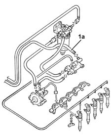

1060A Low pressure fuel return circuit check
- Path
- Test > 10 ENGINE > 1060 DIESEL FUEL INJECTION SYSTEM > 1060A Low pressure fuel return circuit check
- Kind
- test / check procedure
- Applies to
- all engines; all production periods
- Interactive page
- https://sloeber94.github.io/elrnDB-lThss/en/#/162706
Applies to: engines: 2.4 JTD 10V, 2.4 JTD 20V; all production periods
1. Connect the Examiner diagnostic equipment pressure transducer to the return pipe to the tank (1a).
Turn the ignition key to the ON position.
Within 30 seconds check that the pressure reading on the gauge is less than 1 bar.
